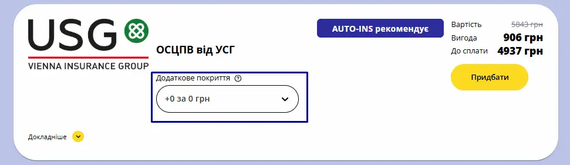

ДТП адвокат від AUTO-INS — безкоштовна юридична допомога після ДТП
Оформлюючи автоцивілку з додатковим покриттям на AUTO-INS, ви автоматично отримуєте доступ до послуги «ДТП адвокат» — безкоштовної консультації та підтримки від юристів, які спеціалізуються саме на справах ДТП.
Як отримати безкоштовну консультацію
Послуга доступна всім клієнтам, які оформили автоцивілку з додатковим покриттям на сайті AUTO-INS.
Обрати доаткове покриття можна від будь якої страхової компанії
У разі ДТП вам потрібно лише написати нам:
- номерний знак автомобіля;
- в якому місяці був оформлений поліс на AUTO-INS.
Юрист одразу перевірить інформацію та надасть рекомендації щодо ваших дій.
Що входить у послугу «ДТП адвокат»
Експертна оцінка збитків
Спеціалісти визначать реальний обсяг пошкоджень авто після ДТП та підготують документ для страхової чи суду.
Юридичний супровід без зайвих клопотів
Беремо на себе комунікацію, підготовку документів і консультації на кожному етапі розгляду ДТП.
Розрахунок вартості ремонту
Отримаєте об’єктивний розрахунок відновлювального ремонту — без завищень та занижень.
Автотехнічна експертиза
Встановлення обставин та причин ДТП, визначення винуватця, аналіз ситуації з технічної точки зору.
Оцінка ринкової вартості авто
Професійна оцінка транспортного засобу з урахуванням його технічного стану та ринку.
Оцінка залишків при тоталі
Допоможемо визначити вартість придатних деталей при повному знищенні авто.
Викуп пошкоджених авто
Можливий оперативний викуп авто у пошкодженому стані — якщо бажаєте швидке рішення.
Досудові переговори
Складання претензій, ведення переговорів зі страховою або винуватцем з метою швидкого відшкодування.
Незалежна експертиза
Організація експертизи, яка підтвердить реальну суму збитків у вашій справі.
Контроль ремонту та підбір СТО
Порекомендуємо перевірені СТО та проконтролюємо процес відновлення авто.
Підготовка документів
Усі довідки, заяви, претензії — готуємо за вас. Ніяких прихованих платежів чи додаткових умов.
Чому саме AUTO-INS
- Ми працюємо лише з перевіреними страховими компаніями.
- Реальна економія без промокодів — чесна ціна вже включає всі знижки.
- Швидке оформлення автоцивілки онлайн за декілька хвилин.
- Підтримка клієнтів після ДТП — без додаткової оплати.
Оформити автоцивілку з додатковим покриттям
Послуга доступна виключно для клієнтів, які оформили поліс на AUTO-INS.